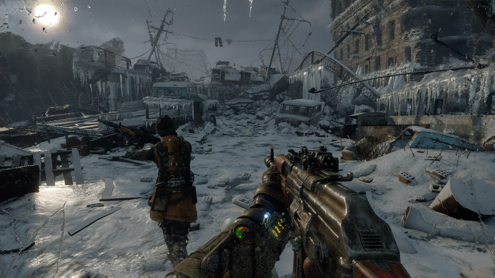
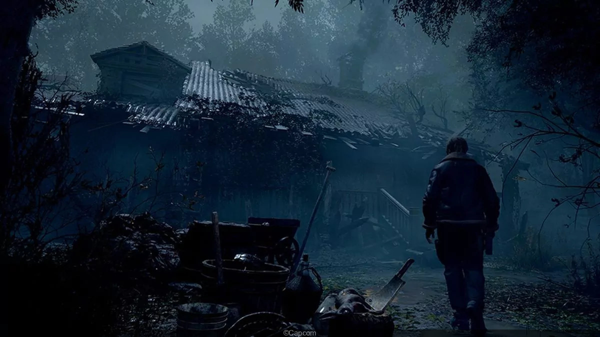
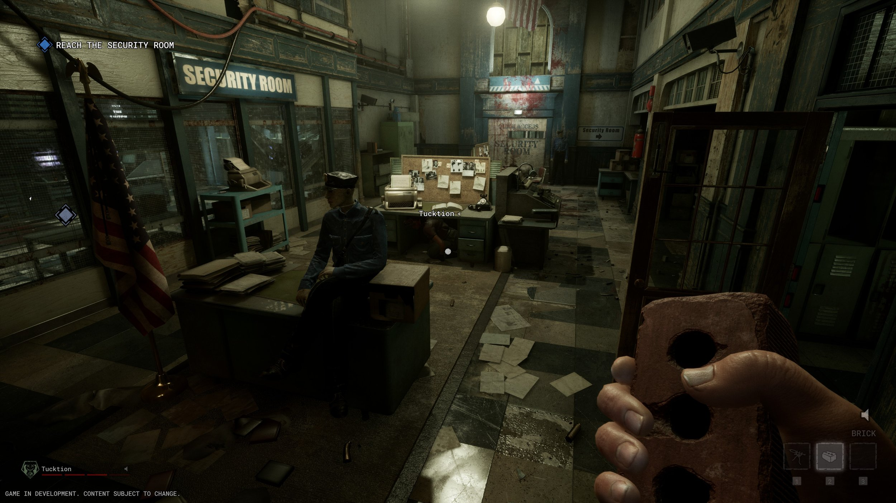
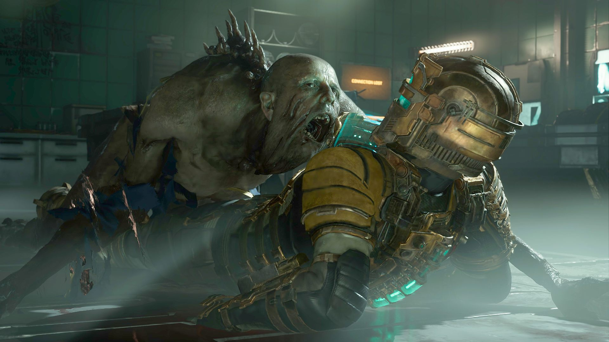

The best Horror
Games realesed
This year is shaping up to be one of the best years for video games in recent memory.
After a difficult few years of development during the pandemic, the number of quality releases is overwhelming,
with several titles offering the peak of their respective genres and franchises.
The following games (listed by release date) are the best of the year so far. I’ll update this list as the year goes on.
Metro Exodus

"Metro: Exodus" è questo gioco post-apocalittico dove sei nei panni di Artyom, che farà un viaggio pieno di pericoli e di svolte imprevedibili
È l'anno 2036.
Un quarto di secolo dopo che la guerra nucleare ha devastato la terra, qualche migliaio di superstiti è ancora aggrappato alla vita sotto le rovine di Mosca, nelle gallerie della Metro.
Hanno lottato contro gli elementi contaminati, hanno combattuto contro bestie mutanti e orrori paranormali, e hanno vissuto la guerra civile sulla propria pelle.
Ma ora, nei panni di Artyom, devi uscire dalla Metro e guidare un gruppo di Ranger spartani in un incredibile viaggio attraverso la Russia post-apocalittica per cercare nuove possibilità di vivere a est.
Metro Exodus è un epico sparatutto narrativo in prima persona firmato 4A Games. Il gioco combina combattimenti letali e furtività con esplorazione e survival horror in uno dei mondi più immersivi mai creati.
Esplora le terre selvagge russe negli enormi livelli non lineari e segui un'emozionante storia che dura un anno intero: primavera, estate e autunno, fino al profondo inverno nucleare.
Ispirato ai romanzi di Dmitry Glukhovsky, Metro Exodus prosegue la storia di Artyom nella più grande avventura della saga di Metro.
Resident Evil

"Resident Evil" è un gioco horror si soppravivenza dove siamo nei panni dell'agente Leon S. Kennedy.
Sopravvivere è solo l'inizio.
Sono passati sei anni dalla catastrofe biologica di Raccoon City. L'agente Leon S. Kennedy, uno dei sopravvissuti all'incidente, è stato inviato a salvare
la figlia rapita del presidente. La individua in un villaggio europeo sperduto, dove gli abitanti hanno decisamente qualcosa che non va, e il sipario si alza
su una storia di salvataggi spericolati e orrori indicibili, in un intreccio di vita e morte, terrore e catarsi.
Con un'esperienza di gioco modernizzata, una trama reinventata e grafica ricca di dettagli vividi, Resident Evil 4 segna la rinascita di un colosso del settore.
Rivivi l'incubo che ha rivoluzionato il survival horror.
The Outlast Trials

"The Outlast Trials" Red Barrels invites you to experience mind-numbing terror, this time with friends.
Set in the era of the Cold War, human guinea pigs are involuntarily recruited by the good folks at the Murkoff Corporation to test advanced methods of brainwashing and mind control.
In a world of distrust, fear, and violence, your morals will be challenged, your endurance tested, and your sanity crushed. All in the name of progress, science, and profit.
Dead Space

"Dead Space" Il classico fantascientifico e survival horror torna, completamente ricostruito per offrire un'esperienza ancora più coinvolgente
Il classico survival horror fantascientifico Dead Space™ torna, completamente ricostruito da zero, per offrire un'esperienza più profonda e coinvolgente.
Questo remake offre un realismo visivo sbalorditivo, un audio atmosferico pieno di suspense e miglioramenti al gameplay restando fedele all'emozionante visione del gioco originale.
Isaac Clarke è un comune ingegnere inviato in missione per riparare la USG Ishimura, un'enorme nave spaziale per la ricerca mineraria, che finirà per scoprire che qualcosa è andato
terribilmente storto. L'equipaggio della nave è stato massacrato e la sua amata partner, Nicole, è scomparsa da qualche parte a bordo.
Ora solo e armato esclusivamente dei suoi strumenti tecnici e delle sue abilità, Isaac si precipita alla ricerca di Nicole, man mano che il mistero da incubo di ciò che
è accaduto a bordo della Ishimura viene svelato. Intrappolato con creature ostili chiamate necromorfi, Isaac affronta una lotta per la sopravvivenza non solo contro gli orrori crescenti della nave, ma anche contro la sua sanità mentale in rovina.
Elden Ring

"Elden RIng" Alzati, Senzaluce, e lasciati guidare dalla grazia verso la conquista dell'Anello ancestrale, il cui potere ti renderà lord dell'Interregno.
Alzati, Senzaluce, e lasciati guidare dalla grazia verso la conquista dell'Anello ancestrale, il cui potere ti renderà lord dell'Interregno.
Un mondo sconfinato e sorprendente
Un vasto mondo, in cui lande sconfinate e dense di pericoli si intersecano senza soluzione di continuità a dedali sotterranei dalle sontuose architetture tridimensionali. Esplora l'ignoto e combatti minacce mortali in un mondo in cui la sopravvivenza è una conquista.
Dai vita al tuo personaggio
Oltre a creare da zero l'aspetto del tuo eroe, puoi personalizzarne l'equipaggiamento scegliendo armi, corazze e incantesimi. Sviluppa le sue capacità in base al tuo stile di gioco, favorendo la forza fisica o puntando sulle pratiche magiche.
Un dramma epico che nasce dal mito
Vivi una storia sfaccettata narrata da frammenti. Un dramma epico in cui le vicende di ciascun personaggio si intrecciano sullo sfondo dell'Interregno.
Una speciale modalità online che collega le esperienze
Oltre alla modalità multiplayer classica, che permette di connettersi direttamente agli altri giocatori ed esplorare insieme, il gioco include una funzione asincrona online che rende tangibile la presenza di altri eroi.